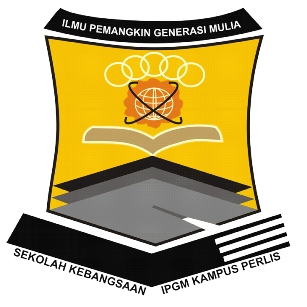

Click Here to visit my primary school website.
I study at Sekolah Kebangsaan Institut Penguruan Guru Malaysia from 2007 until 2012. Initially, two Technical Department buildings were used as temporary locations for school buildings. In 2007, two classrooms were renovated into classrooms to accommodate 42 students.The school management got permission to move to the new building on November 8, 2010. I got enough lessons at this school and also have a lot of friends. Alhamdulliah, UPSR results, I got grade 3A 2B
Click Here to visit my secondary school social media.
In 2013, I continued my studies at Sekolah Menengah Kebangsaan Tuanku Lailatul Shahreen. At that time, that school was a cluster school, so the students at that school were mostly good at it. It scared me to approach them. But if I want to succeed, I have to try to ask them if I don't know. For my PT3 exam results, I got grade 7A 2B 1C. For SPM, I got grade 4A 4B 1C. Even it is not a good result, but im very proud of myself because I was try my best to achieve that.
Click Here to visit UiTM Kedah Website.
I got an offer to continue my studies in Uitm Kedah. At first, I was thinking twice about pursuing my studies or not because my target course is at another university. After I received my parents' advice, I decided to continue my studies in this course. for me. this course was a lot of fun because I was able to learn something new even though I was studying in a library management course. This semester is the last semester despite many challenges such as coranavirus causing learning to take place through online distance learning. I hope to finish my studies successfully